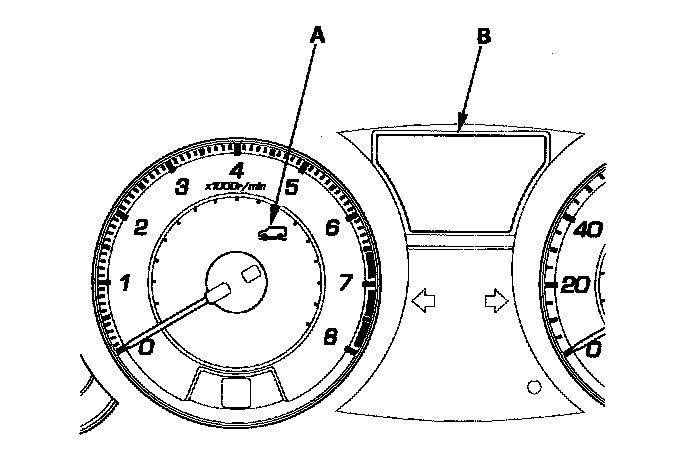

Initial Inspection and Diagnostic Overview
System IndicatorThis system has an active damper system indicator (A).

When the active damper system is working correctly, the active damper system indicator comes on after turning the ignition switch ON (II) and it goes off when the engine is started.
The indicator will stay on until the ignition switch is turned OFF, or until the problem goes away (system returns to normal) the indicator will then go off.
NOTE: The damper system mode is controlled by the active damper system switch and is indicated on the MID (multi-information display).
Diagnostic Trouble Code (DTC)
^ The memory can hold any number of DTCs. However, when the same DTC is detected more than once, the most recent DTC is written over the earlier one. Therefore, when the same problem is detected repeatedly, it is memorized as a single DTC.
^ The DTCs are indicated in ascending number order, not in the order they occur.
^ The DTCs are memorized in the EEPROM. Therefore, the memorized DTCs cannot be cancelled by disconnecting the battery. Do the specified procedures to clear the DTCs.
Self-diagnosis
^ Self-diagnosis can be classified into two categories:
- Initial diagnosis: Done right after the ignition switch is turned ON (II) and until the active damper system indicator goes off.
- Regular diagnosis: Done right after the initial diagnosis until the ignition switch is turned OFF.
^ When the system detects a problem, it will go into fail safe mode which turns off the active damper function. When in this mode, handling characteristics are limited, and the vehicle speed should be reduced to 60 mph (96 km/h) or less, and driven no more than 200 miles (321 km).
Mode Select Switch
The system has two damping modes. Comfort and sport mode. Modes are changed using the mode selector switch.
Active Damper System Damper Units
The active damper system has four individual damper units, one on each suspension corner. These dampers function same as conventional dampers, but they should only be replaced as a single unit when indicated by a DTC. Do not replace the dampers units as a set.
How to Troubleshoot DTCs
DTC troubleshooting procedures assume that the cause of the problem is still present and the active damper system indicator is still on. Following a troubleshooting procedure for a code that has been cleared and does not reset can result in incorrect diagnosis.
1. Question the client about the conditions that were present when the problem occurred, such as speed, turning, road conditions, and which mode the active damper system was selected. Try to duplicated the DTC by test-driving the vehicle under the same conditions.
2. Check for DTCs in the PGM-FI, A/T, and VSA system related to F-CAN stored at the same time. Troubleshoot these codes first, before troubleshooting the active damper system.
3. After troubleshooting, or repairs are done, clear the DTCs, and test-drive the vehicle under the same conditions that originally set the DTCs. Make sure the active damper system indicator does not come on.
Intermittent Failures
The term "Intermittent failure" means a system may have had a failure, but it checks OK now. If the active damper system indicator does not come on, check for poor connections or loose terminals at all connectors related to the circuit that you are troubleshooting. If the indicator was on but then went out, the original problem may have been intermittent.